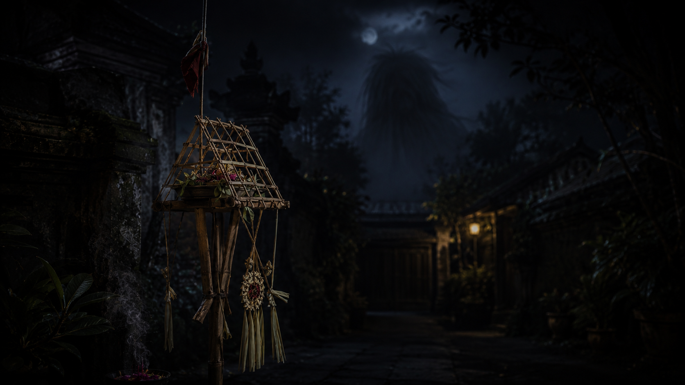
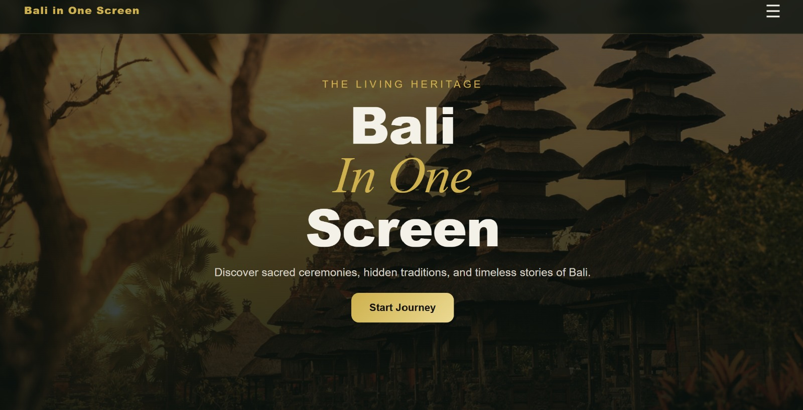

Experience Bali's Day of Silence
We live in a world that never stops.
Every moment, our attention is pulled in countless directions by messages, notifications, meetings, and endless streams of information. Before experiencing the silence of Nyepi, take a moment to feel the constant distractions that have quietly become part of everyday life.
Every journey has a beginning.
When people think of Nyepi, they often imagine an island wrapped in silence. But silence is never the beginning of the story—it is the destination.
Before Bali becomes still, the island prepares itself through a series of sacred rituals. Each tradition carries its own purpose, meaning, and story, guiding the journey toward the silence of Nyepi.
Among these sacred traditions, two ceremonies mark the beginning of our journey.
As the first light touches the sea, Bali takes its first step toward silence. This sacred journey is called Melasti.
Melasti is a sacred purification ceremony held several days before Nyepi. During this ritual, Balinese Hindus bring sacred temple objects (pratima and other ceremonial symbols) to the sea, lakes, or other natural water sources to be ritually cleansed. More than a physical cleansing, Melasti symbolizes the purification of the mind, heart, and spirit. It is a moment to release negative thoughts, restore inner balance, and prepare both individuals and the community to enter Nyepi with a clear mind, renewed harmony, and spiritual readiness.
Pengerupukan is held on the eve of Nyepi and marks the final celebration before the island falls completely silent. Across Bali, villages perform the Ngerupuk ritual, a tradition believed to drive away negative forces and restore balance before entering the new Saka year. Pengerupukan.
One of its most iconic traditions is the Ogoh-Ogoh parade. For weeks, young people from each Banjar and Sekaa Teruna Teruni (STT) work together to design, build, and carry giant handcrafted figures through their villages. In many regencies and cities, Ogoh-Ogoh competitions are also held, turning Pengerupukan into a celebration of creativity, teamwork, and local pride. After the parade, the island prepares to leave the noise behind and welcome the silence of Nyepi.
Before experiencing Nyepi for yourself, take a moment to understand the meaning behind one of Bali's most remarkable traditions.
The word Nyepi comes from the Balinese word sepi, meaning silence, quietness, or stillness. More than the absence of sound, Nyepi represents a moment to pause, reflect, and reconnect with ourselves, with others, and with nature.
Nyepi marks the Balinese New Year according to the Saka calendar. The celebration unfolds through a series of sacred traditions, beginning with Melasti, followed by Pengerupukan, and reaching its most meaningful moment on Nyepi Day itself. For twenty-four hours, Bali embraces complete silence as a time for reflection, self-discipline, spiritual renewal, and harmony with nature.
During Nyepi, the absence of artificial light allows the night sky to reveal thousands of stars, offering one of the clearest stargazing experiences in Bali.
Ngurah Rai International Airport temporarily suspends its operations during Nyepi, making Bali one of the few places in the world where an international airport completely pauses for a day.
With minimal human activity, noise and air pollution decrease significantly. The peaceful atmosphere allows nature to recover, even if only for a short time.
Understanding Nyepi means more than knowing its traditions. At the heart of this sacred day are four principles that guide how silence is truly observed. Together, they shape the experience of Nyepi itself.
Silence is more than the absence of sound. During Nyepi, it is guided by four principles that shape the way Balinese Hindus observe the Day of Silence. Together, these principles are known as Catur Brata Penyepian.
Refraining from fire and artificial light, encouraging simplicity, calmness, and spiritual reflection.
Refraining from work and daily activities, allowing both body and mind to rest from worldly routines.
Refraining from travelling, giving the island an opportunity to pause and embrace complete stillness.
Refraining from entertainment and pleasure, creating space for self-reflection and inner awareness.
Knowing these principles is one thing. Living them, even for a few moments, is another.

You have learned the four principles that shape Nyepi. Now it's time to experience them yourself. Every choice matters.
Scenario text here
Result text here
The island has fallen silent.
No traffic.
No lights.
Only nature.
Only stars.
For just a few moments, you experienced what Bali embraces once every year.
Silence is not about escaping the world. It is about returning to yourself.
Thank you for experiencing Nyepi Simulator. We hope this interactive journey has given you a deeper appreciation of Bali's Day of Silence and the cultural values it represents.

Continue discovering Bali through another interactive experience featuring traditions, ceremonies, destinations, local wisdom, culinary heritage, and hidden stories from across the island.
Explore Website →